FluidNC Controller
An ESP32-based board running FluidNC handles motion control. It sits on a printed DIN-rail mount alongside the drivers.
// fabrication · cnc
A CNC control panel for my Sherline 5400 mill, built around a FluidNC controller and DM556T stepper drivers on 3D-printed DIN-rail mounts.
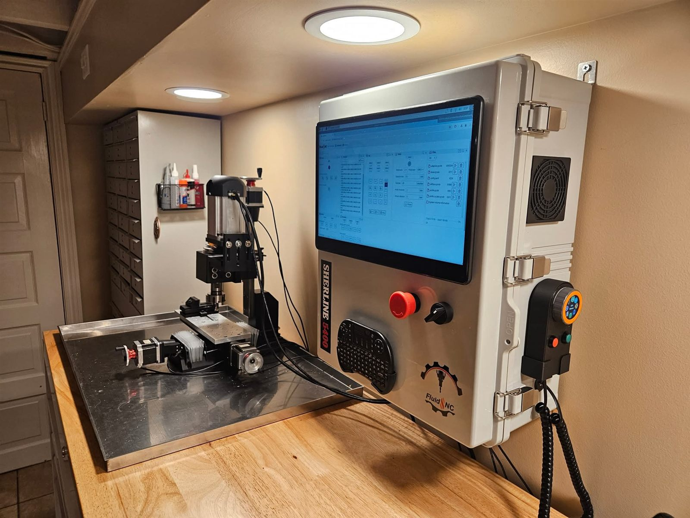
The Sherline 5400 is a small benchtop mill. To run it under CNC, I'm building a control panel that houses all of its electronics in one place.
The motion controller is an ESP32-based FluidNC board driving four DM556T stepper drivers. I designed everything around them in SolidWorks: DIN-rail mounts for the drivers and controller, front panels for power and the stepper connections, and a mount for the pendant.
The mill enclosure is a separate project: Sherline 5400 Mill Enclosure →
The pieces that make up the control panel.
An ESP32-based board running FluidNC handles motion control. It sits on a printed DIN-rail mount alongside the drivers.
Four DM556T stepper drivers, each on its own printed DIN-rail mount, run the mill's motors.
Printed power and stepper panels, with cable glands, bring wiring in and out of the control panel.
A printed mount holds the handheld pendant for jogging the machine.
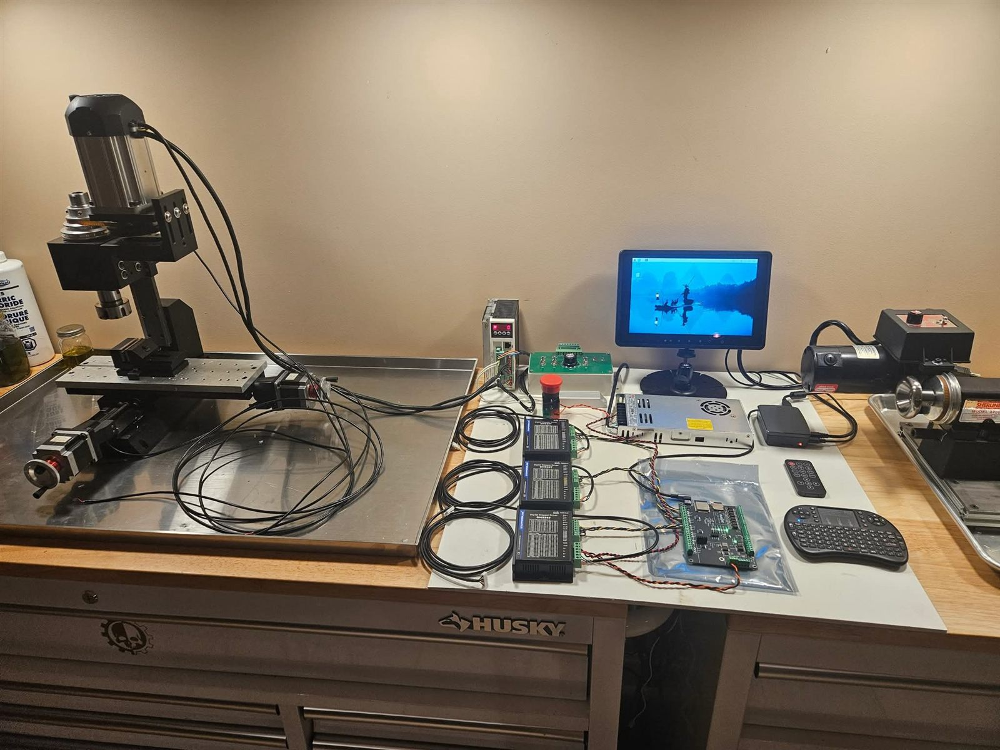
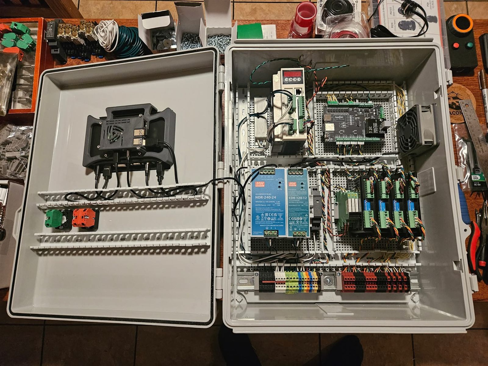
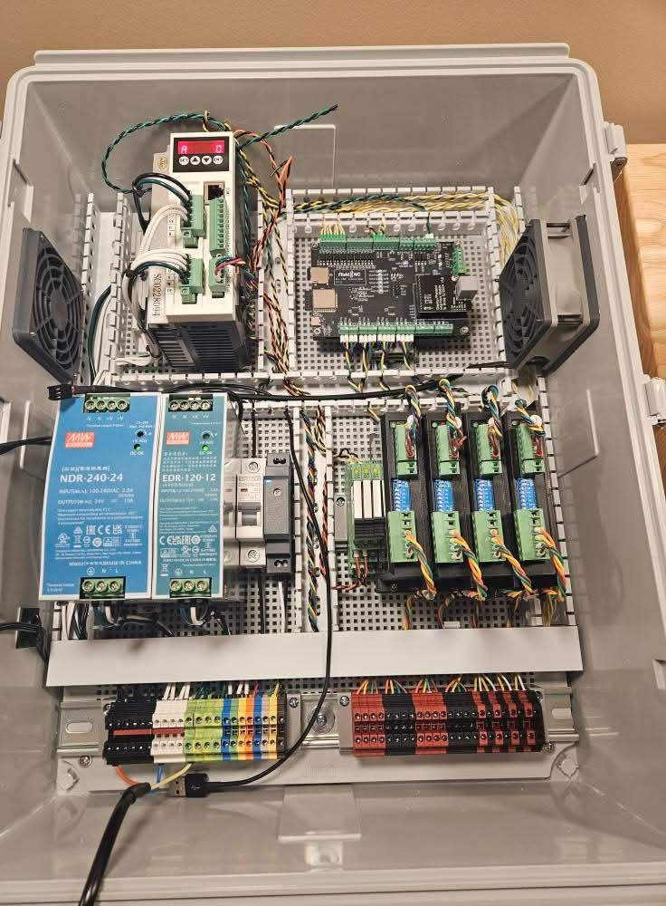
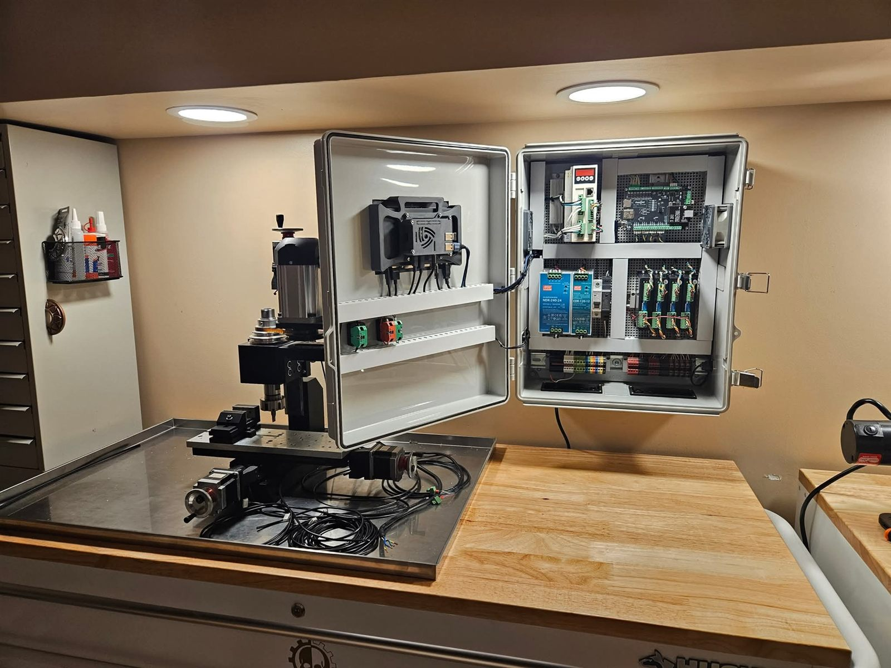
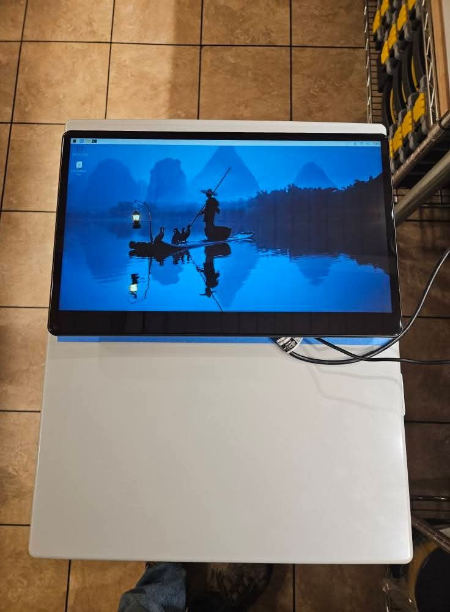
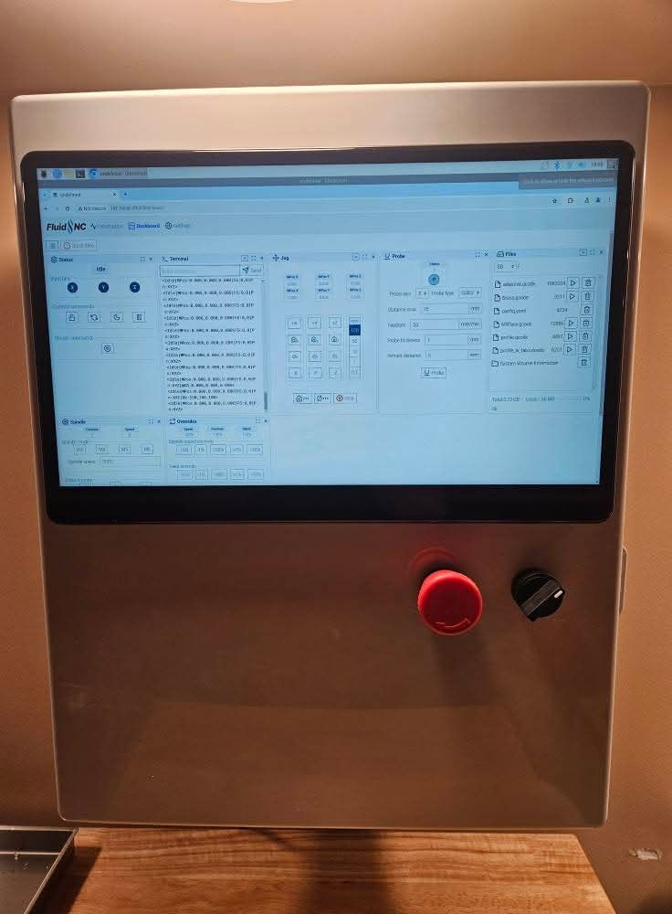
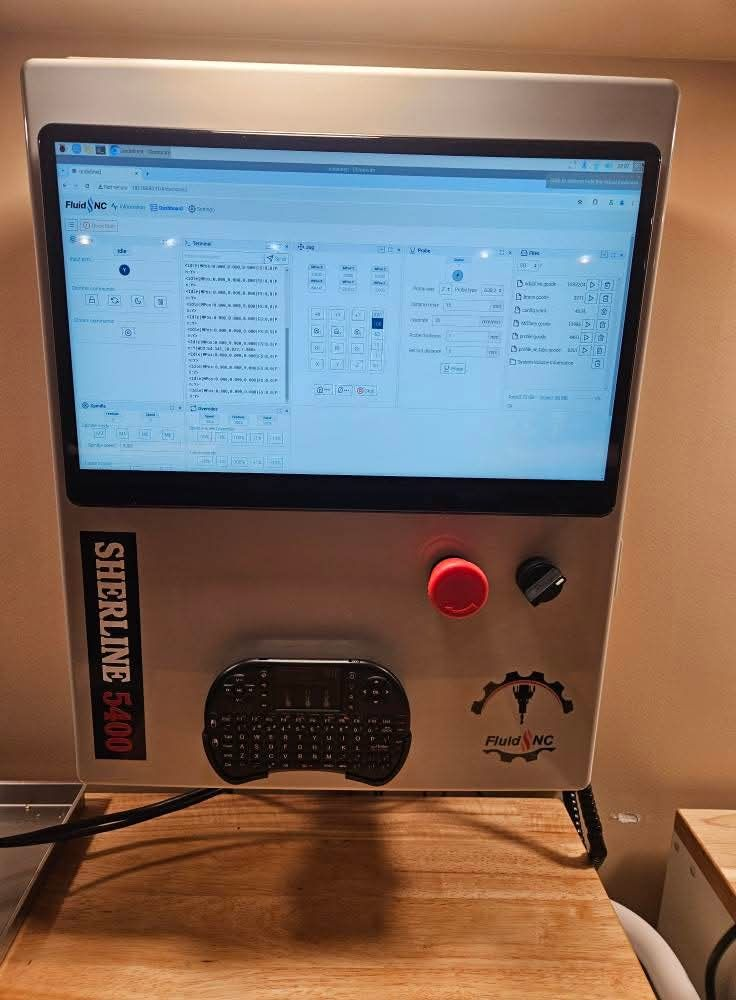
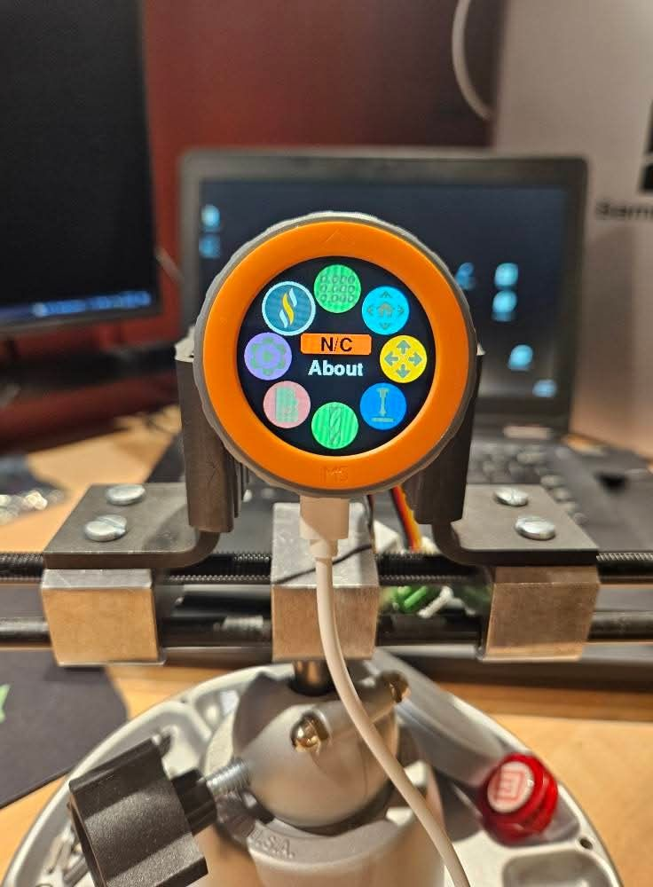
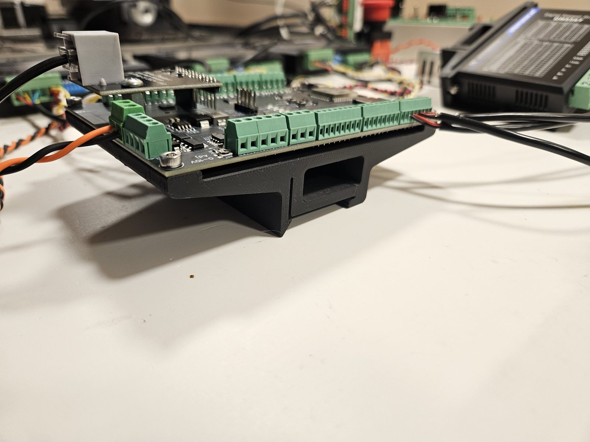
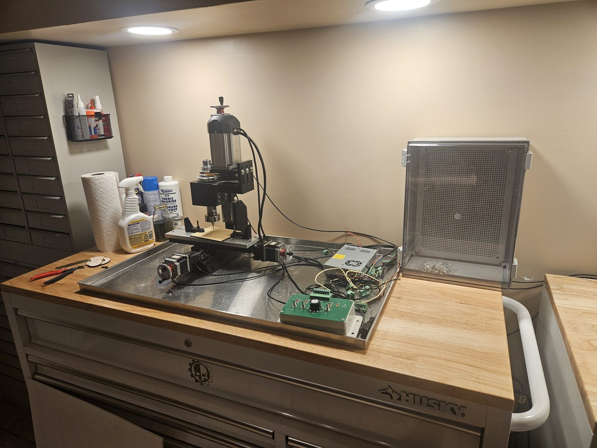
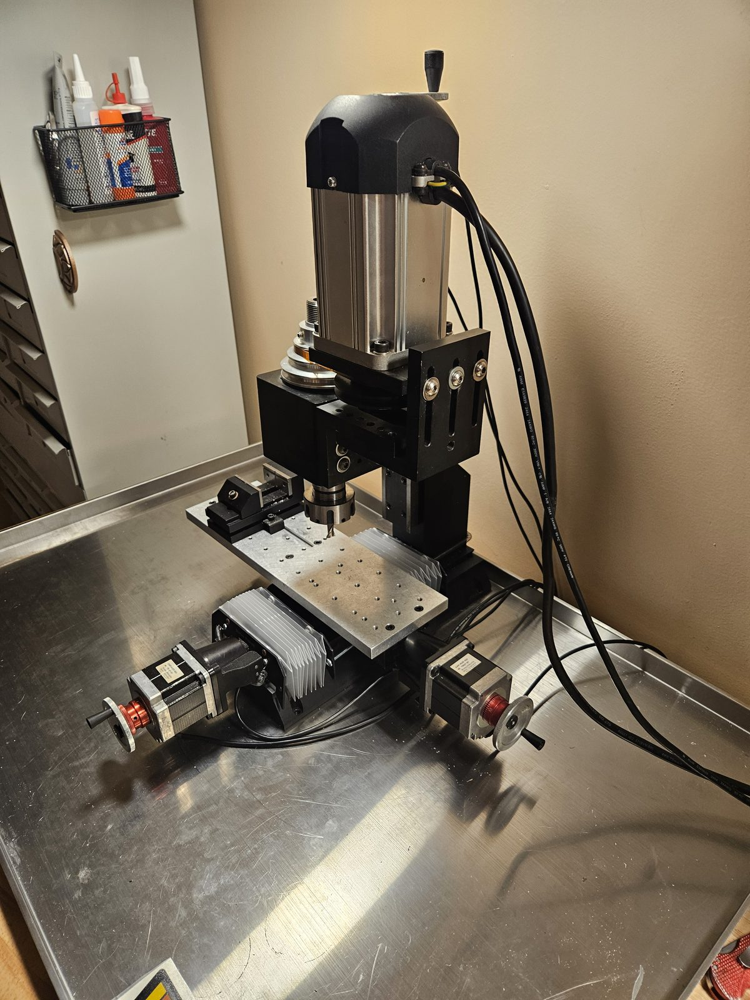
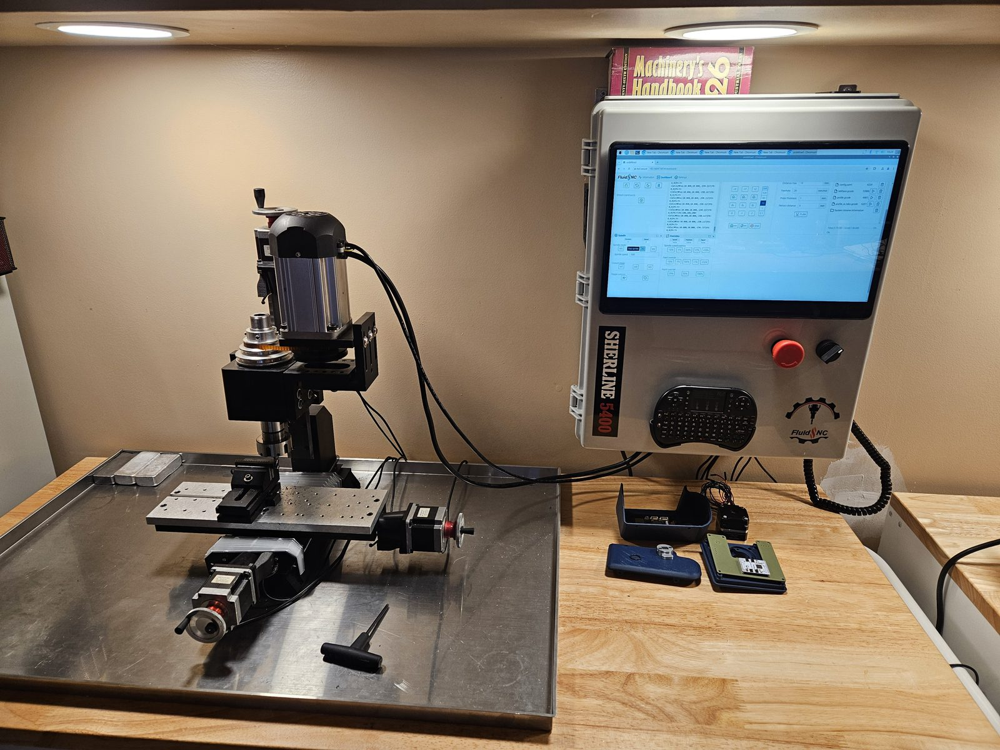
Updates as the project moves along.
Electronics layout, DIN-rail mounts, and panels designed in SolidWorks.